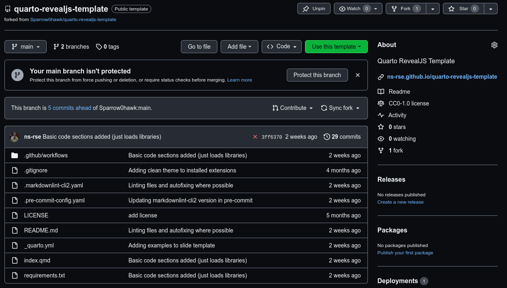
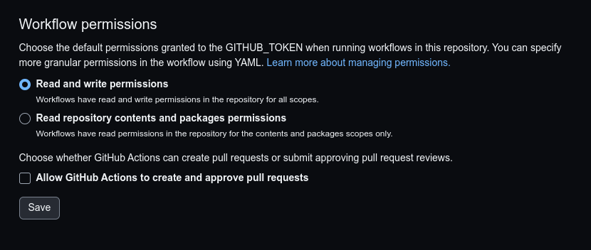
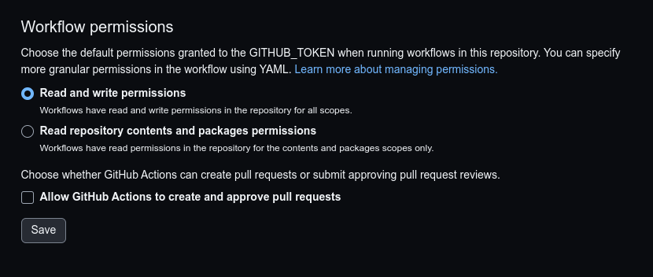
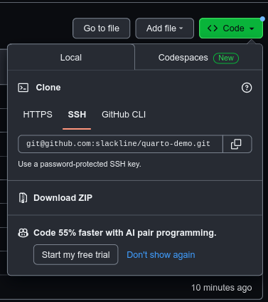
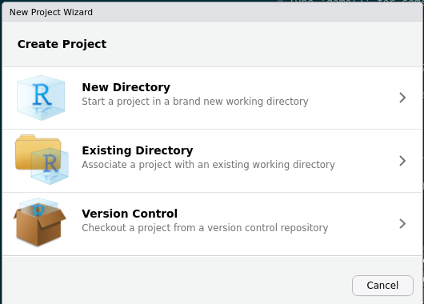
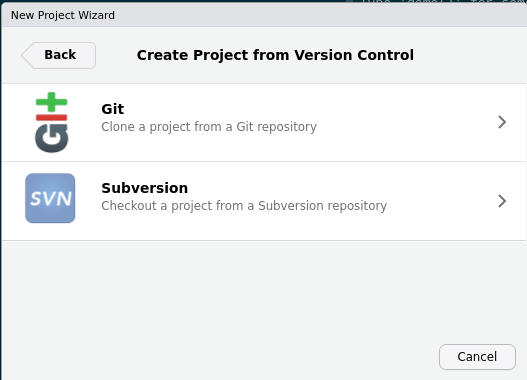
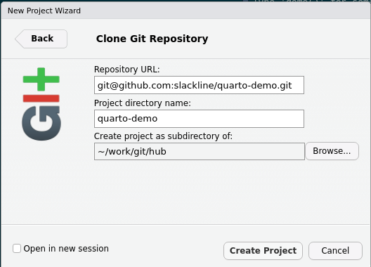

SheffieldR : Quarto for Slides
![]()
Slides
Overview
- Background
- Markdown (very brief)
- Using a template
- Writing slides
- Publishing
Literate Programming - Origins
a computer program is given as an explanation of how it works in a natural language, such as English, interspersed (embedded) with snippets of macros and traditional source code, from which compilable source code can be generated.1

Literate Programming - Better Programmes
My programs are not only explained better than ever before; they also are better programs, because the new methodology encourages me to do a better job.1
Background - Pedigree
- WEB (Knuth & Levy (2001))
- noweb
- S (Becker, Chambers & Wilks (1988))
- Sweave (Leisch F. (2002a); Leisch F (2002b); Leisch F (2003))
- RMarkdown (R Markdown: The Definitive Guide)
- 🎉 Quarto 🎉
Markdown
- Simple markup language.
- Separate content from style.
- Write in ASCII plain text.
- Simple to version control.
Basic Markdown
- Bold
- Italics
Strikethrough- Search
Quarto documentation is excellent.
Pre-requisites
Need a few things to get going…
Quarto RevealJS Template
Quarto RevealJS Template includes…
- Sample slides with many examples.
- GitHub Workflowto publish pages.
- Instructions on usage.
- Thanks to David Wilby and Alex Coleman.
Using Quarto RevealJS Template
- Go to Quarto RevealJS Template
- Make a copy to your account using the “Use This Template” button.
- Give repository a unique name.

Configuring Repository
- Settings > Actions > Workflow Permissions > Read and write
 

Cloning - URL
- Code button

RStudio Cloning - New Project
- File > New Project > Version Control > Git.1

RStudio Cloning - Version Control
- File > New Project > Version Control > Git.1

RStudio Cloning - Git
- File > New Project > Version Control > Git.1

Install Themes and Extensions
- Themes and extensions need installing
quarto install --no-prompt extension jmbuhr/quarto-qrcode
quarto install --no-prompt extension grantmcdermott/quarto-revealjs-clean
quarto install --no-prompt extension ArthurData/quarto-confetti
[✓] Downloading
[✓] Unzipping
Found 1 extension.
The following changes will be made:
Qrcode [Install] 0.0.1 (shortcode)
[✓] Extension installation complete.
Learn more about this extension at https://www.github.com/jmbuhr/quarto-qrcode
[✓] Downloading
[✓] Unzipping
Found 1 extension.
The following changes will be made:
clean [Install] 1.0.0 (format)
[✓] Extension installation complete.
Learn more about this extension at https://www.github.com/grantmcdermott/quarto-revealjs-clean
[✓] Downloading
[✓] Unzipping
Found 1 extension.
The following changes will be made:
Confetti [Install] 1.0.0
[✓] Extension installation complete.
Learn more about this extension at https://www.github.com/ArthurData/quarto-confettiInitial Publish
quarto publish- Creates a special branch
gh-pageswhich holds HTML. - Pushes branch to GitHub.
- View slides at https://
.github.io/my_first_quarto_slides/
Initial Publish
❱ quarto publish
? Provider: › GitHub Pages
? Publish site to https://<YOUR_GITHUB_USERNAME>.github.io/<NAME_OF_REPOSITORY using gh-pages? (Y/n) › Yes
Switched to a new branch 'gh-pages'
[gh-pages (root-commit) 20ba65a] Initializing gh-pages branch
remote:
remote: Create a pull request for 'gh-pages' on GitHub by visiting:
remote: https://github.com/slackline/quarto-demo/pull/new/gh-pages
remote:
To github.com:slackline/quarto-demo.git
* [new branch] HEAD -> gh-pages
Switched to branch 'main'
Your branch is up to date with 'origin/main'.
From github.com:slackline/quarto-demo
* branch gh-pages -> FETCH_HEAD
Rendering for publish:
processing file: index.qmd
1/5
2/5 [fig-airquality]
3/5
4/5 [fig-airquality2]
5/5
output file: index.knit.md
pandoc
to: revealjs
from: markdown+emoji
output-file: index.html
standalone: true
title-prefix: <TITLE>
wrap: none
default-image-extension: png
html-math-method:
method: mathjax
url: >-
https://cdnjs.cloudflare.com/ajax/libs/mathjax/2.7.0/MathJax.js?config=TeX-AMS_HTML-full
slide-level: 2
incremental: false
metadata
link-citations: true
width: 1050
height: 700
margin: 0.1
center: false
navigationMode: linear
controlsLayout: edges
controlsTutorial: false
hash: true
history: true
hashOneBasedIndex: false
fragmentInURL: false
transition: none
backgroundTransition: none
pdfSeparateFragments: false
lang: en
auto-stretch: false
theme:
- default
- _extensions/grantmcdermott/clean/clean.scss
menu:
side: left
slideNumber: true
date-format: long
revealjs-plugins:
- confetti
title: Template Revealjs Quarto site
author:
- name: Your Name
orcid: 0000-0000-0000-0000
email: email@address.work
affiliations: Employers Name
footer: '**Slides** : [**github-username.github.io/<repository>**](https://github-username.github.io/<repository>)'
showSlideNumber: speaker
chalkboard: true
Preparing worktree (resetting branch 'gh-pages'; was at 20ba65a)
branch 'gh-pages' set up to track 'origin/gh-pages'.
HEAD is now at 20ba65a Initializing gh-pages branch
fatal: pathspec '.' did not match any files
[gh-pages 46df001] Built site for gh-pages
125 files changed, 15421 insertions(+)
create mode 100644 .nojekyll
create mode 100644 img/OSC_Sheffield.png
create mode 100644 index.html
create mode 100644 index_files/figure-revealjs/fig-airquality2-1.png
create mode 100644 robots.txt
create mode 100644 search.json
create mode 100644 site_libs/clipboard/clipboard.min.js
create mode 100644 site_libs/quarto-contrib/qrcodejs-v1.0.0/qrcode.js
create mode 100644 site_libs/quarto-html/light-border.css
create mode 100644 site_libs/quarto-html/popper.min.js
create mode 100644 site_libs/quarto-html/quarto-html.min.css
create mode 100644 site_libs/quarto-html/quarto-syntax-highlighting.css
create mode 100644 site_libs/quarto-html/tabby.min.js
create mode 100644 site_libs/quarto-html/tippy.css
create mode 100644 site_libs/quarto-html/tippy.umd.min.js
create mode 100644 site_libs/revealjs/dist/reset.css
create mode 100644 site_libs/revealjs/dist/reveal.css
create mode 100644 site_libs/revealjs/dist/reveal.esm.js
create mode 100644 site_libs/revealjs/dist/reveal.esm.js.map
create mode 100644 site_libs/revealjs/dist/reveal.js
create mode 100644 site_libs/revealjs/dist/reveal.js.map
create mode 100644 site_libs/revealjs/dist/theme/fonts/league-gothic/LICENSE
create mode 100644 site_libs/revealjs/dist/theme/fonts/league-gothic/league-gothic.css
create mode 100755 site_libs/revealjs/dist/theme/fonts/league-gothic/league-gothic.eot
create mode 100755 site_libs/revealjs/dist/theme/fonts/league-gothic/league-gothic.ttf
create mode 100755 site_libs/revealjs/dist/theme/fonts/league-gothic/league-gothic.woff
create mode 100644 site_libs/revealjs/dist/theme/fonts/source-sans-pro/LICENSE
create mode 100755 site_libs/revealjs/dist/theme/fonts/source-sans-pro/source-sans-pro-italic.eot
create mode 100755 site_libs/revealjs/dist/theme/fonts/source-sans-pro/source-sans-pro-italic.ttf
create mode 100755 site_libs/revealjs/dist/theme/fonts/source-sans-pro/source-sans-pro-italic.woff
create mode 100755 site_libs/revealjs/dist/theme/fonts/source-sans-pro/source-sans-pro-regular.eot
create mode 100755 site_libs/revealjs/dist/theme/fonts/source-sans-pro/source-sans-pro-regular.ttf
create mode 100755 site_libs/revealjs/dist/theme/fonts/source-sans-pro/source-sans-pro-regular.woff
create mode 100755 site_libs/revealjs/dist/theme/fonts/source-sans-pro/source-sans-pro-semibold.eot
create mode 100755 site_libs/revealjs/dist/theme/fonts/source-sans-pro/source-sans-pro-semibold.ttf
create mode 100755 site_libs/revealjs/dist/theme/fonts/source-sans-pro/source-sans-pro-semibold.woff
create mode 100755 site_libs/revealjs/dist/theme/fonts/source-sans-pro/source-sans-pro-semibolditalic.eot
create mode 100755 site_libs/revealjs/dist/theme/fonts/source-sans-pro/source-sans-pro-semibolditalic.ttf
create mode 100755 site_libs/revealjs/dist/theme/fonts/source-sans-pro/source-sans-pro-semibolditalic.woff
create mode 100644 site_libs/revealjs/dist/theme/fonts/source-sans-pro/source-sans-pro.css
create mode 100644 site_libs/revealjs/dist/theme/quarto.css
create mode 100644 site_libs/revealjs/plugin/highlight/highlight.esm.js
create mode 100644 site_libs/revealjs/plugin/highlight/highlight.js
create mode 100644 site_libs/revealjs/plugin/highlight/monokai.css
create mode 100644 site_libs/revealjs/plugin/highlight/plugin.js
create mode 100644 site_libs/revealjs/plugin/highlight/zenburn.css
create mode 100644 site_libs/revealjs/plugin/markdown/markdown.esm.js
create mode 100644 site_libs/revealjs/plugin/markdown/markdown.js
create mode 100755 site_libs/revealjs/plugin/markdown/plugin.js
create mode 100755 site_libs/revealjs/plugin/math/katex.js
create mode 100644 site_libs/revealjs/plugin/math/math.esm.js
create mode 100644 site_libs/revealjs/plugin/math/math.js
create mode 100644 site_libs/revealjs/plugin/math/mathjax2.js
create mode 100644 site_libs/revealjs/plugin/math/mathjax3.js
create mode 100644 site_libs/revealjs/plugin/math/plugin.js
create mode 100644 site_libs/revealjs/plugin/notes/notes.esm.js
create mode 100644 site_libs/revealjs/plugin/notes/notes.js
create mode 100644 site_libs/revealjs/plugin/notes/plugin.js
create mode 100644 site_libs/revealjs/plugin/notes/speaker-view.html
create mode 100644 site_libs/revealjs/plugin/pdf-export/pdfexport.js
create mode 100644 site_libs/revealjs/plugin/pdf-export/plugin.yml
create mode 100644 site_libs/revealjs/plugin/quarto-line-highlight/line-highlight.css
create mode 100644 site_libs/revealjs/plugin/quarto-line-highlight/line-highlight.js
create mode 100644 site_libs/revealjs/plugin/quarto-line-highlight/plugin.yml
create mode 100644 site_libs/revealjs/plugin/quarto-support/footer.css
create mode 100644 site_libs/revealjs/plugin/quarto-support/plugin.yml
create mode 100644 site_libs/revealjs/plugin/quarto-support/support.js
create mode 100644 site_libs/revealjs/plugin/reveal-chalkboard/README.md
create mode 100644 site_libs/revealjs/plugin/reveal-chalkboard/font-awesome/LICENSE.txt
create mode 100644 site_libs/revealjs/plugin/reveal-chalkboard/font-awesome/css/all.css
create mode 100644 site_libs/revealjs/plugin/reveal-chalkboard/font-awesome/css/brands.css
create mode 100644 site_libs/revealjs/plugin/reveal-chalkboard/font-awesome/css/fontawesome.css
create mode 100644 site_libs/revealjs/plugin/reveal-chalkboard/font-awesome/css/regular.css
create mode 100644 site_libs/revealjs/plugin/reveal-chalkboard/font-awesome/css/solid.css
create mode 100644 site_libs/revealjs/plugin/reveal-chalkboard/font-awesome/css/svg-with-js.css
create mode 100644 site_libs/revealjs/plugin/reveal-chalkboard/font-awesome/css/v4-shims.css
create mode 100644 site_libs/revealjs/plugin/reveal-chalkboard/font-awesome/css/v4-shims.min.css
create mode 100644 site_libs/revealjs/plugin/reveal-chalkboard/font-awesome/webfonts/fa-brands-400.eot
create mode 100644 site_libs/revealjs/plugin/reveal-chalkboard/font-awesome/webfonts/fa-brands-400.svg
create mode 100644 site_libs/revealjs/plugin/reveal-chalkboard/font-awesome/webfonts/fa-brands-400.ttf
create mode 100644 site_libs/revealjs/plugin/reveal-chalkboard/font-awesome/webfonts/fa-brands-400.woff
create mode 100644 site_libs/revealjs/plugin/reveal-chalkboard/font-awesome/webfonts/fa-brands-400.woff2
create mode 100644 site_libs/revealjs/plugin/reveal-chalkboard/font-awesome/webfonts/fa-regular-400.eot
create mode 100644 site_libs/revealjs/plugin/reveal-chalkboard/font-awesome/webfonts/fa-regular-400.svg
create mode 100644 site_libs/revealjs/plugin/reveal-chalkboard/font-awesome/webfonts/fa-regular-400.ttf
create mode 100644 site_libs/revealjs/plugin/reveal-chalkboard/font-awesome/webfonts/fa-regular-400.woff
create mode 100644 site_libs/revealjs/plugin/reveal-chalkboard/font-awesome/webfonts/fa-regular-400.woff2
create mode 100644 site_libs/revealjs/plugin/reveal-chalkboard/font-awesome/webfonts/fa-solid-900.eot
create mode 100644 site_libs/revealjs/plugin/reveal-chalkboard/font-awesome/webfonts/fa-solid-900.svg
create mode 100644 site_libs/revealjs/plugin/reveal-chalkboard/font-awesome/webfonts/fa-solid-900.ttf
create mode 100644 site_libs/revealjs/plugin/reveal-chalkboard/font-awesome/webfonts/fa-solid-900.woff
create mode 100644 site_libs/revealjs/plugin/reveal-chalkboard/font-awesome/webfonts/fa-solid-900.woff2
create mode 100644 site_libs/revealjs/plugin/reveal-chalkboard/img/blackboard.png
create mode 100644 site_libs/revealjs/plugin/reveal-chalkboard/img/boardmarker-black.png
create mode 100644 site_libs/revealjs/plugin/reveal-chalkboard/img/boardmarker-blue.png
create mode 100644 site_libs/revealjs/plugin/reveal-chalkboard/img/boardmarker-green.png
create mode 100644 site_libs/revealjs/plugin/reveal-chalkboard/img/boardmarker-orange.png
create mode 100644 site_libs/revealjs/plugin/reveal-chalkboard/img/boardmarker-purple.png
create mode 100644 site_libs/revealjs/plugin/reveal-chalkboard/img/boardmarker-red.png
create mode 100644 site_libs/revealjs/plugin/reveal-chalkboard/img/boardmarker-yellow.png
create mode 100644 site_libs/revealjs/plugin/reveal-chalkboard/img/chalk-blue.png
create mode 100644 site_libs/revealjs/plugin/reveal-chalkboard/img/chalk-green.png
create mode 100644 site_libs/revealjs/plugin/reveal-chalkboard/img/chalk-orange.png
create mode 100644 site_libs/revealjs/plugin/reveal-chalkboard/img/chalk-purple.png
create mode 100644 site_libs/revealjs/plugin/reveal-chalkboard/img/chalk-red.png
create mode 100644 site_libs/revealjs/plugin/reveal-chalkboard/img/chalk-white.png
create mode 100644 site_libs/revealjs/plugin/reveal-chalkboard/img/chalk-yellow.png
create mode 100644 site_libs/revealjs/plugin/reveal-chalkboard/img/sponge.png
create mode 100644 site_libs/revealjs/plugin/reveal-chalkboard/img/whiteboard.png
create mode 100644 site_libs/revealjs/plugin/reveal-chalkboard/plugin.js
create mode 100644 site_libs/revealjs/plugin/reveal-chalkboard/plugin.yml
create mode 100644 site_libs/revealjs/plugin/reveal-chalkboard/style.css
create mode 100644 site_libs/revealjs/plugin/reveal-confetti/confetti.js
create mode 100644 site_libs/revealjs/plugin/reveal-menu/menu.css
create mode 100644 site_libs/revealjs/plugin/reveal-menu/menu.js
create mode 100644 site_libs/revealjs/plugin/reveal-menu/plugin.yml
create mode 100644 site_libs/revealjs/plugin/reveal-menu/quarto-menu.css
create mode 100644 site_libs/revealjs/plugin/reveal-menu/quarto-menu.js
create mode 100644 site_libs/revealjs/plugin/search/plugin.js
create mode 100644 site_libs/revealjs/plugin/search/search.esm.js
create mode 100644 site_libs/revealjs/plugin/search/search.js
create mode 100644 site_libs/revealjs/plugin/zoom/plugin.js
create mode 100644 site_libs/revealjs/plugin/zoom/zoom.esm.js
create mode 100644 site_libs/revealjs/plugin/zoom/zoom.js
create mode 100644 sitemap.xml
origin git@github.com:slackline/quarto-demo.git (fetch)
origin git@github.com:slackline/quarto-demo.git (push)
To github.com:slackline/quarto-demo.git
20ba65a..46df001 HEAD -> gh-pages
[✓] Deploying gh-pages branch to website (this may take a few minutes)
ERROR: TypeError: Invalid URL: 'https://<YOUR_GITHUB_USERNAME>.github.io/<NAME_OF_REPOSITORY/.nojekyll'
Stack trace:
at getSerialization (ext:deno_url/00_url.js:89:11)
at new URL (ext:deno_url/00_url.js:359:27)
at new Request (ext:deno_fetch/23_request.js:300:25)
at ext:deno_fetch/26_fetch.js:418:27
at new Promise (<anonymous>)
at fetch (ext:deno_fetch/26_fetch.js:414:18)
at file:///home/neil/.local/quarto/quarto-1.4.358/bin/quarto.js:103939:40
at eventLoopTick (ext:core/01_core.js:188:13)
at async withSpinner (file:///home/neil/.local/quarto/quarto-1.4.358/bin/quarto.js:38988:16)
at async Object.publish5 [as publish] (file:///home/neil/.local/quarto/quarto-1.4.358/bin/quarto.js:103933:9)Configuration : _quarto.yaml
- Define project type (
website) - Set
title,site-urlanddescription
Before
Slides : index.qmd
- Now you can write your slides!
index.qmdis the main file to work on.- Template includes many examples.
Speaker Notes
Extensions
- Lots of extensions.
- Add functionality.
- Install to repository locally and adding to GitHub Action.
Extensions - GitHub Action
Changing Themes
Previewing
- Preview slides locally whenever you want using
quarto preview. - Renders files locally and opens them in a new browser tab.
- Use regularly when writing your slides!
Starting python3 kernel...Done
Executing 'index.ipynb'
pandoc
to: revealjs
from: markdown+emoji
output-file: index.html
standalone: true
title-prefix: SheffieldR - Quarto for Slides
wrap: none
default-image-extension: png
html-math-method:
method: mathjax
url: >-
https://cdnjs.cloudflare.com/ajax/libs/mathjax/2.7.0/MathJax.js?config=TeX-AMS_HTML-full
slide-level: 2
incremental: false
metadata
link-citations: true
width: 1050
height: 700
margin: 0.1
center: false
navigationMode: linear
controlsLayout: edges
controlsTutorial: false
hash: true
history: true
hashOneBasedIndex: false
fragmentInURL: false
transition: none
backgroundTransition: none
pdfSeparateFragments: false
lang: en
auto-stretch: false
theme:
- default
- _extensions/grantmcdermott/clean/clean.scss
menu:
side: left
slideNumber: true
date-format: long
revealjs-plugins:
- confetti
title: 'SheffieldR : Quarto for Slides'
author:
- name: Neil Shephard
orcid: 0000-0001-8301-6857
email: n.shephard@sheffield.ac.uk
affiliations: 'RSE, University of Sheffield'
footer: '**Slides** : [**ns-rse.github.io/SheffieldR-quarto-for-slides**](https://ns-rse.github.io/SheffieldR-quarto-for-slides)'
showSlideNumber: speaker
chalkboard: true
Output created: _site/index.html
Watching files for changesGitHub Actions
- GitHub Action uses
.github/workflows/quarto-publish.yamlto publish. - Install extensions.
- Install R/Python and any packages.
on:
push:
branches: main
name: Render and Publish
jobs:
build-deploy:
runs-on: ubuntu-latest
steps:
- name: Check out repository
uses: actions/checkout@v3
- name: Set up Quarto
uses: quarto-dev/quarto-actions/setup@v2
with:
# To install LaTeX to build PDF book
tinytex: true
# uncomment below and fill to pin a version
# version: 1.2.335
- name: Install Quarto Extensions
run: |
quarto install --no-prompt extension jmbuhr/quarto-qrcode
quarto install --no-prompt extension grantmcdermott/quarto-revealjs-clean
quarto install --no-prompt extension ArthurData/quarto-confetti
- name: Install Python and Dependencies
uses: actions/setup-python@v4.3.0
with:
python-version: '3.10'
cache: 'pip'
- run: pip install -r requirements.txt
- name: Install R
uses: r-lib/actions/setup-r@v2
with:
r-version: '4.2.0'
- name: Install R Dependencies
uses: r-lib/actions/setup-renv@v2
with:
cache-version: 1
- name: Publish to GitHub Pages (and render)
uses: quarto-dev/quarto-actions/publish@v2
with:
target: gh-pages
env:
GITHUB_TOKEN: ${{ secrets.GITHUB_TOKEN }} # this secret is always available for github actionsGitHub Actions - Software Dependencies
- R packages you use locally need installing on GitHub.
- A
stepin GitHub Action calledInstall R. r-lib/actions/setup-r@v2installs R.r-lib/actions/setup-renv@v2installs packages.- Use
renvin your project to define packages.
Publish!
- Stage, commit and push to GitHub!
- If on
mainbranch Action kicks in.
BONUS - Linting with pre-commit
- Includes pre-commit hook to lint Markdown.
- Ensures consistent style used.
- Configuration via
.markdownlint-cli2.yaml. - Automatically fixes mistakes where possible.
- Pre-commit : Protecting your future self1